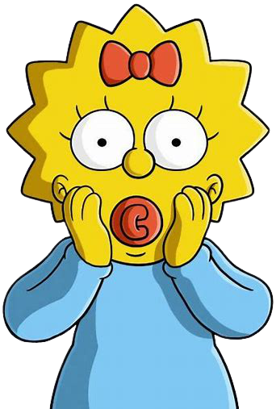

Margaret Evelyn Lenny Simpsonéuma personagem fictícia da série animada Os Simpsons e parte da família titular, notadamente o membro mais jovem. O bebê da família foi nomeado Maggie em homenagem à irmã mais nova de Groening. Maggie então fez sua estreia com o resto da família Simpsons em 19 de abril de 1987 no curta "Good Night".
Maggie, apesar de ser a mais nova da família, é extremamente inteligente e esperta (mas não deixando isso claro na maioria das vezez) ela adora sua chupeta, constantemente demonstra habilidades muito impressionantes e sempre se envolve em situações diversas tentando reparar os erros de sua família.
Ela é frequentemente vista chupando sua chupeta vermelha e, quando ela anda, ela tropeça em suas roupas e cai em seu rosto. Embora raramente fale, ela frequentemente faz um barulho característico de chupar com sua chupeta, que se tornou sinônimo da personagem. Seus ruídos de chupeta são fornecidos pelo criador da série, Matt Groening, e pelo produtor Gabor Csupo. As partes falantes ocasionais de Maggie e outras vocalizações são atualmente fornecidas por Nancy Cartwright.